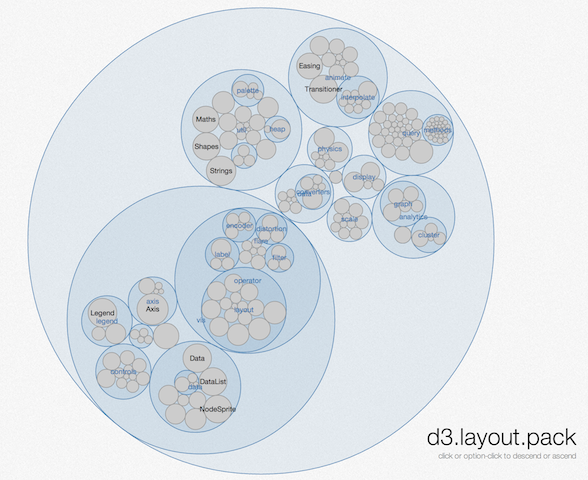
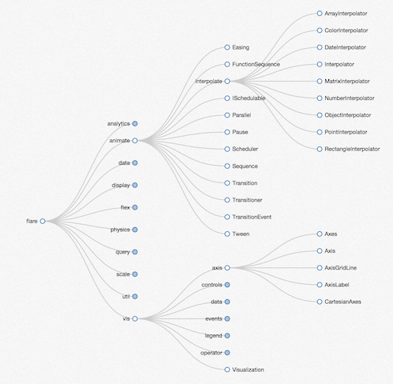
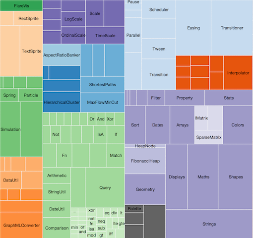
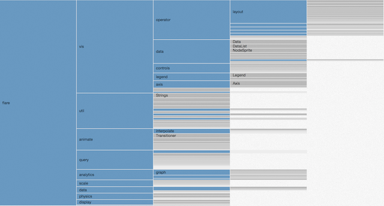
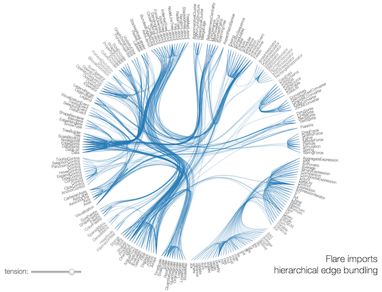
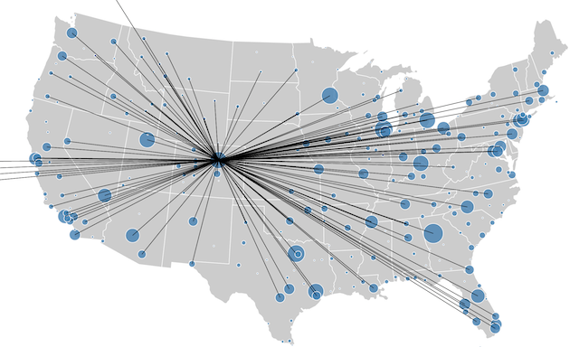

D3.js Tutorial
Second Part
A tutorial by Dominik Moritz (@domoritz) and Kanit "Ham" Wongsuphasawat (@kanitw)
Interactive Data Lab, University of Washington
(Based on Vadim Ogievetsky and Scott Murray's work)
Interactions
Event Listeners
.on('mouseover',...), .on('click',...)
Note 1: :hover pseudo-selector also works with svg!
Note 2: To remove a listener, pass null as the listener. To remove all listeners for a particular event type, pass null as the listener, and .type as the type, e.g. selection.on(".foo", null).
SVG Tooltips
Last week, we did it in svg.
SVG Tooltips
HTML Tooltips
See "Div Tooltip HTML" in Murray
Brushing - d3.svg.brush()
From http://bl.ocks.org/mbostock/4063663. See also Focus+Context
Scale
Domain ↦ Range
http://www.jeromecukier.net/blog/2011/08/11/d3-scales-and-color/
.linear()

var x = d3.scale.linear().domain([0, 10]).range([0,100]);
console.log(x(-1),x(0), x(4.4), x(10), x(11)); //-10 0 44 100 110 with some rounding errors
console.log(x.clamp()(-1), x.clamp()(11); // 0 100
Scale methods
.nice()round domain to nicer numbers e.g. from[0.2014, 0.9966]to[0.2, 1]d3.scale.linear().domain([0.2014,0.9966]).nice().domain() // [0.1,1].rangeRound()output range in integers – better for positioning marks on the screend3.scale.linear().domain([0, 10]).range([0,100])(0.1234)// 1.234 d3.scale.linear().domain([0, 10]).rangeRound([0,100])(0.1234)// 1.invert()d3.scale.linear().domain([0, 10]).range([0,100]).invert(50); //5.ticks()return uniformly spaced ticks for your axes. (See Axes for examples).clamp()limit output to range if an input outside the domain is provided
Scales supports various interpolations!
Color
var x = d3.scale.linear()
.domain([12, 24])
.range(["steelblue", "brown"]);
x(16); // #666586
x.interpolate(d3.interpolateHsl)(16); //#3cb05f
Size
var x = d3.scale.linear()
.domain([12, 24])
.range(["0px", "720px"]);
x(16); // 240px
Other Scales
d3.scale.log(), d3.scale.pow(), d3.scale.quantile
Ordinal Scales
d3.scale.ordinal()
ordinal.rangePoints(interval[, padding]) – e.g. Plots
ordinal.rangeBands(interval[, padding[, outerPadding]]) - e.g. Bar Chart
Categorical Color Scale
.category10()
#1f77b4 #ff7f0e #2ca02c #d62728 #9467bd #8c564b #e377c2 #7f7f7f #bcbd22 #17becf
SVG Axes
//Create an axis for a given scale, and configure as desired.
var xAxis = d3.svg.axis()
.scale(x)
.orient("bottom"); // returns a function!
svg.append("g")
.attr("class", "x axis")
.attr("transform", "translate(0," + height + ")")
.call(xAxis); //rendering axis with callNeed customization!
.axis path, .axis line {
fill: none;
stroke: #000;
shape-rendering: crispEdges;
}
See Bar Chart example
Layouts & Maps
Pie
Many layouts are just data generators/modifier.
Source: Chapter 11 in Interactive Data Visualization for the Web by Murray
Force Directed
Pack
Tree
Treemap
Partition
Bundle
Voronoi
Maps
d3.csv(), d3.tsv()
Implemented Using XMLHttpRequest
var format = d3.time.format("%b %Y");
d3.csv("stocks.csv", function(stocks) {
stocks.forEach(function(d) {
d.price = +d.price;
d.date = format.parse(d.date);
});
});
Note: A web server is required when loading external data. Use python -m SimpleHTTPServer 8888 is one easy way.
See Mike's Simple Area Chart Example
importing data
d3.json()
var format = d3.time.format("%b %Y");
d3.json("stocks.json", function(stocks) {
stocks.forEach(function(d) {
d.date = format.parse(d.date);
});
});
Useful Tips
Reusable d3.
Repeatable, Modifiable, Configurable, Extensible
- Mike Bostock's Towards Reusable Charts
- Mike Pennisi Exploring Reusability with D3.js